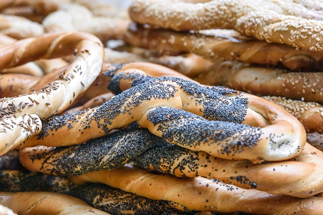

A soft pretzel is a popular baked snack made from dough that is boiled briefly in water and then baked until golden brown.
It is typically shaped into a knot or twisted form and sprinkled with coarse salt. Here is some information about soft pretzels in terms of
carbohydrates and how to enjoy them:
1. Carbohydrate content: Soft pretzels are primarily made from flour, which is a source of carbohydrates. The exact carbohydrate content can
vary depending on the size and recipe of the pretzel. On average, a standard-sized soft pretzel contains approximately 50-60 grams of
carbohydrates.
2. Nutritional profile: In addition to carbohydrates, soft pretzels typically provide small amounts of protein and fat. They are relatively
low in fiber and other essential nutrients compared to whole grain products.
3. Preparation: Soft pretzels can be made at home from scratch or purchased from bakeries, concession stands, or snack vendors. Commercially
sold pretzels may come in various sizes and flavors, including cinnamon sugar, cheese-filled, or dipped in chocolate.
4. Serving suggestions: Soft pretzels are often enjoyed as a savory snack or appetizer. Here are some ways to eat them:
- Plain: Soft pretzels are delicious on their own. They have a chewy texture and a slightly salty taste. You can enjoy them as a
standalone snack or serve them alongside your favorite dipping sauce.
- Dipped in mustard: One traditional way to enjoy soft pretzels is by dipping them in mustard. The tangy flavor of the mustard complements
the salty pretzel well.
- Cheese dip: Soft pretzels pair wonderfully with cheese dip. You can choose from a variety of cheese-based dips such as nacho cheese,
beer cheese, or cheddar cheese sauce.
- Sweet variations: Soft pretzels can also be enjoyed in sweet variations. After baking, you can brush them with melted butter and
sprinkle them with cinnamon sugar. Alternatively, you can dip them in chocolate or caramel sauce for a decadent treat.
- Sandwiches: Some people use soft pretzels as a bread substitute for sandwiches. They can be sliced horizontally and filled with deli
meats, cheese, and condiments to create a unique and flavorful sandwich.
- Pretzel bites: Instead of making large pretzels, you can shape the dough into smaller bite-sized pieces. These pretzel bites are great
for snacking and can be served with various dipping sauces.
Remember to consume soft pretzels in moderation as part of a balanced diet. They can be high in refined carbohydrates and sodium. If you have
specific dietary concerns or restrictions, it's advisable to consult with a healthcare professional or registered dietitian for personalized
advice.